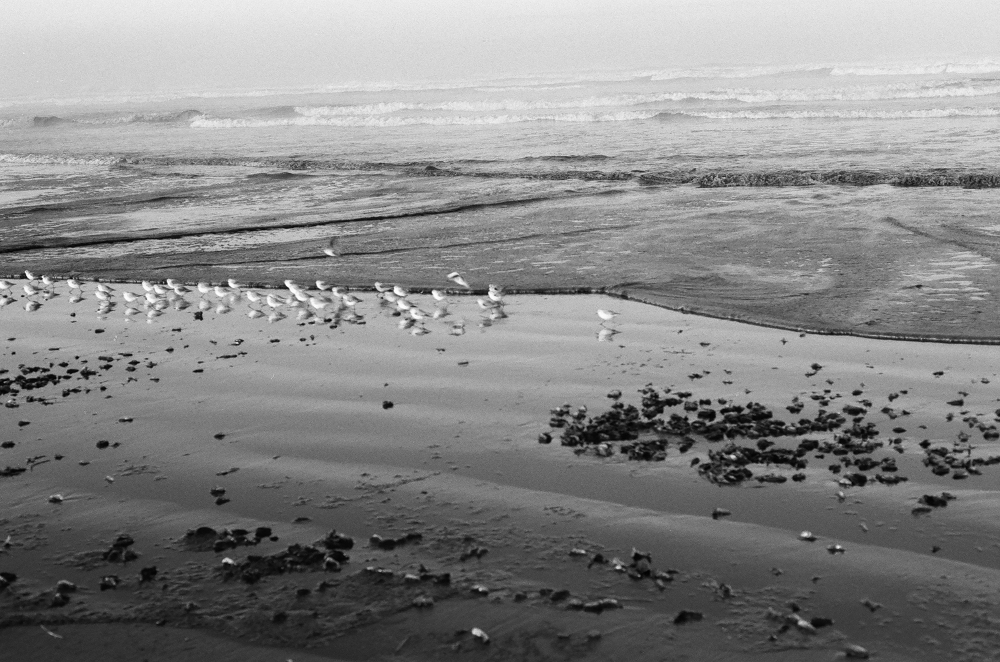

Pictures of Success
Driving to Hawaii

Eventually I may have some color shots to add to these but for now this
is all black and white. These are from a short trip I took to Long Beach, WA.
I really like it there I think partially because it reminds me of where I grew up
in NJ. All these shots were taken with Ilford FP4 Plus film if that's of interest to you.
Black and white film always creates such a distinct mood on the beach. Oftentimes
the photos come out almost otherworldly like the one above did. That's the full moon
setting in the photo.
Whenever
I see tracks on the beach or leading into the water I always think of the song
"Driving to Hawaii" by Summer Salt.


I love sandpipers! I'm pretty sure these guys are sandpipers. They're so cute and always make me laugh. I'm thrilled whenever I see them on the beach.
One of my favorite things about the coast is that it's an edge place. Two worlds meet and there are fascinating creatures that more or less make their home in both places. The weather that happens on the coast is fascinating as well. You can often literally watch a wall of clouds/fog roll in. That was the case here and combined with the photo being black and white it reminded me of ghosts.
There are patterns everywhere on the beach and the sand often does fascinating things.